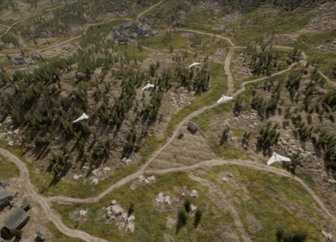

JSBSim Physics
Project AirSim includes JSBSim integration for aircraft dynamics.
Getting Started
JSBSim examples live under client/python/example_user_scripts/jsbsim/ and are grouped by airframe:
Path |
Purpose |
|---|---|
|
Cessna 310 example script and sim configs |
|
Skywalker X8 scripts, tests, and sim configs |
Prerequisites
Complete Client Setup (Python client installed, virtual environment activated).
Launch the Project AirSim simulation server.
Cessna 310 example
Files:
Path |
Purpose |
|---|---|
|
Connects, loads the scene, performs a short takeoff/turn/landing demo |
|
Scene config for the C310 example |
|
Robot config for the C310 example |
Run it from the repository root:
python client/python/example_user_scripts/jsbsim/cessna_310/hello_c310_jsbsim.py
Skywalker X8 examples

Files:
Path |
Purpose |
|---|---|
|
Loads the X8 scene, seeds an air launch, and flies a waypoint circuit |
|
Reusable heading, altitude, airspeed, pitch, and roll controller |
|
Runs the X8 swarm example in Forest/MountainVillage |
|
Unit tests for the X8 autopilot helper |
|
Paused steppable-clock scene for a single X8 |
|
X8 JSBSim robot config |
Run the single-aircraft example:
python client/python/example_user_scripts/jsbsim/x8_skywalker/hello_x8_jsbsim.py
Optional longer run:
python client/python/example_user_scripts/jsbsim/x8_skywalker/hello_x8_jsbsim.py --max-sim-time 120
The swarm example generates its scene at runtime and reuses the same X8 robot config.
Ground Height Mode
JSBSim robots support two ground height modes through the robot config field
jsbsim-ground-mode:
{
"physics-type": "jsbsim-physics",
"jsbsim-ground-mode": "constant"
}
Mode |
Behavior |
|---|---|
|
Default. Uses the terrain/floor height at the initial robot position as one fixed ground height for the whole simulation. Falls back to the scene |
|
Samples the Unreal terrain/floor height during the simulation. |
Terrain Callback Usage
Project AirSim builds a terrain-elevation callback when JSBSim initializes. The
callback samples the robot’s cached terrain elevation first, then the scene
terrain callback, and finally falls back to the scene home-geo-point.altitude.
That initial sample is used to set JSBSim’s initial terrain elevation before
RunIC().
After initialization, the callback installed into JSBSim depends on
jsbsim-ground-mode:
Mode |
JSBSim callback |
Runtime usage |
|---|---|---|
|
|
The Project AirSim terrain callback is sampled once at initialization. During the simulation, JSBSim receives the same fixed terrain elevation for every |
|
|
JSBSim calls back during |
These callbacks feed JSBSim’s internal ground-height calculations, including
height-above-ground and contact-related state. Project AirSim’s own collision
response path, such as NeedsCollisionResponse() and
CalcNextKinematicsWithCollision(), is separate from the JSBSim terrain
callback.
Timestep
JSBSim robots support a configurable internal physics timestep through the
robot config field jsbsim-dt, in seconds:
{
"physics-type": "jsbsim-physics",
"jsbsim-model": "c310",
"jsbsim-dt": 0.008333333333333333
}
If jsbsim-dt is omitted, Project AirSim uses 1/120 s
(0.008333333333333333, or 120 Hz).
Known Issues
Flat ground surface (no mesh following)
In
constantground mode, the simulated ground is flat at the terrain/floor height sampled at the initial robot position. Different parts of the vehicle cannot rest at different heights on sloped terrain. There is no mesh-following behavior after initialization.In
terrainground mode, JSBSim samples terrain height at several contact points and has the capacity to respond to irregular ground surfaces.
Ground penetration during sustained ground movement
If a JSBSim vehicle continuously advances on the ground, it slowly sinks over time until it fully penetrates the terrain surface.
Copyright (C) IAMAI CONSULTING CORP
MIT License. All rights reserved.